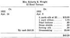

1926—The New-Way Course in Fashionable Clothes-Making
Lesson 54—Bookkeeping
Purpose of this Lesson
In her experience as a shop owner, or even as a dressmaker in her own home, the dressmaker will encounter many perplexing problems, and unless she is able to solve them correctly her business will suffer. Little business problems, they are—but they loom big in the matter of making a success. In this lesson we will give you all the business information necessary, and we advise you to study it carefully so that you will always be ready to solve any problem that may arise.
There is, for instance, the very important matter of establishing credit. It is one of the first things the dressmaker must attend to without credit she will be seriously handicapped.
By promptly paying all bills when due, the dressmaker gains the reputation of being dependable—and her credit is considered good by those merchants with whom she does business. The dressmaker should never, under any circumstances, be negligent in paying her bills.
If a month comes when you find that for some unexpected reason, you cannot meet your bills, your credit will enable you to hold over until the next month. But if you have been negligent, if you have the reputation of not paying bills on time, an extension of credit may be denied you while you are new in the business.
It is also wise to make cash purchases. An additional discount is usually allowed in this case, and with most merchants, a 30-day account is as good as cash. But whether her purchase is for cash or on time, the shop owner should never break a promise, never keep the merchant waiting for his money. It is a very poor policy.
Another important detail to attend to when opening a shop is fire and burglary insurance. Perhaps the latter is not entirely essential, but the first certainly is. Your policies should be large enough to cover possible loss, and should be kept up to date. File an annual or semi-annual inventory of your stock and fixtures with your insurance papers, so that adjustment can be made without loss of time or business in case of fire.
There are many laws pertaining to your business, both state and national, and you must know them all. For instance, you must not use the feathers of egrets for trimming purposes. If you do, you are breaking a law for which you may be subjected to heavy fine. Compensation insurance laws are in effect in many states and you will have to comply with these. Your work rooms may come under the factory law and must meet its requirement. By learning all these things and complying with them much trouble will be saved. Other laws can be easily found out from your lawyer or someone else already in the business, and you should be careful to observe them all.
Your Bank Account
It is convenient to have a checking bank account when you start out in business. Choose a bank that is convenient in location and secure from the banker all necessary information regarding the banking laws of the state.
When you have a bank account, you are able to pay all bills by check. There are many good reasons for doing this. In the first place, the canceled check which is returned to you is your receipt. Secondly, it is the most convenient and business-like way to pay bills. It saves time, trouble and mistakes. It also gives the business a certain prestige, especially when the checks are specially printed by the bank with the name of dressmaking shop on them. Banks do this free of charge if a certain amount is deposited.
The matter of depositing money, making out checks endorsing, etc., is covered completely in the by-laws of the bank which you will find in the pass-book furnished you when you make your first deposit. If you are in doubt, consult the banker and he will give you all necessary information.
One thing is important. If a check is lost, stolen, or issued by mistake, the bank should be notified at once to stop payment. The paying teller will then watch for the check and refuse to cash it. But the bank cannot be held responsible for making payment on a wrong check if the depositor has not made proper notification.
Computing Overhead Expenses
The term overhead expenses is used to indicate those expenses which every business must meet, namely, rent, light, heat, telephone service, insurance, etc. These are the items that must be added to the cost of production. Of course, you can readily see how important it is to keep these overhead expenses as low as possible. It is only by keeping them low that the shop owner can hope to meet her bills and her payroll, invest in new things, and have a sufficient salary left over for her own needs.
Having computed your overhead expenses, you know exactly what your income must be very day to meet these expenses and leave enough over to meet your demands. Therefore you are able to fix the prices on your gowns to be profitable. You will know exactly what to charge without being exorbitant and without losing money. But if you do not keep accounts, if you do not know exactly where your business stands, you are likely to undercharge or overcharge, both of which are very bad indeed. You must find the just-right price for your merchandise, except, of course, when you have end-of-the-season sales to move "dead" merchandise from your shelves.
Keeping Memorandums
A word of caution will not be amiss regarding the trusting of one's memory too implicitly. A business woman cannot afford to trust her memory. If she needs ilk thread, or taffeta silk or pins, she must make a note of it, so that she has it in black and white when the salesman calls. She must not trust to her memory to call it to mind at precisely the moment she wants it.
Wise dressmakers keep small notebooks in which they jot each day reminders and suggestions that help them keep their business up to date. There is nothing so conclusive to success as keeping the shop well stocked, up-to-date and attractive in appearance. And you will find that a systematically kept notebook will help you a great deal. Common-sense is sometimes more valuable in business than capital.